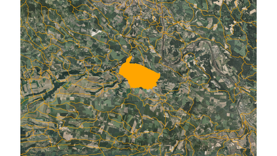
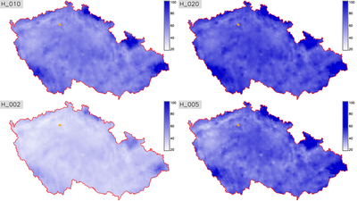
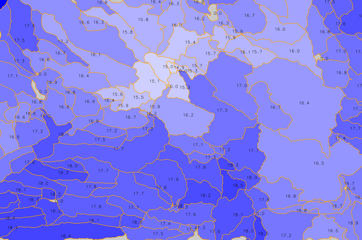

DESCRIPTION
r.subdayprecip.design computes reduction of subday design
precipitation series.
The tool uses methods of zonal statistics to compute average values of
design 24 hours precipitation for a selected area or for a spot. This
value is reduced to the chosen length design rain for selected period
of repetition.
NOTES
Subday design precipitation series are important for hydrological
modelling and soil erosion problems in a small catchment scale when
designing common measures for promoting water retention, landscape
drainage systems, etc.
First automatization has been implemented by well-known method
which is based on reduction of 24 hours design precipitation to
shorter time. GIS is used for spatial supervised classification of
point values of specified repetition periods (2, 10, 20, 50 a 100
years) over the area of the Czech Republic.
|  |
 |
Figure: Basins (in orange) with orthophoto
on background |
Figure: Repetition periods (2, 10, 20, 50 years)
in the area of the Czech Republic |

Figure: Basins colored by H_002_60 value
EXAMPLE
r.subdayprecip.design map=basin raster=H_002,H_005,H_010,H_020 rainlength=60
REFERENCES
- Landa M., Kavka P., Strouhal L. (2015). A
GIS tool for reduction day precipitation to subday (Geomatics
Workbooks 12)
- Tomasu
M. (2013). Tvorba
nastoje pro sestaveni kratkodobych navrhovych destu na zaklade
rizene interpolace a redukce (in Czech)
- Torfs, P. J. J. F., Horacek, S., & Rakovec,
O. (2010). Chimera, a framework for conceptual modelling using
analytical sensitives to parameters: implementation and
application to PDM model.
- Sokol, Z., & Bliznak, V. (2009). Areal distribution and
precipitation-altitude relationship of heavy short-term
precipitation in the Czech Republic in the warm part of the
year. Atmospheric Research, 94(4), 652-662.
Acknowledgement
This work has been supported by the research project QJ1520265 -
"Variability of Short-term Precipitation and Runoff in Small
Czech Drainage Basins and its Influence on Water Resources
Management".
SEE ALSO
v.rast.stats
AUTHORS
Martin Landa, OSGeoREL, Czech Technical University in Prague, Czech
Republic
The module is inspired by Python script developed for
Esri ArcGIS platform by M. Tomasu in 2013 (see REFERENCES).
Last changed: $Date $